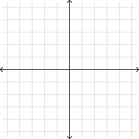
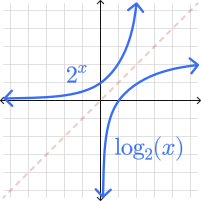

Write your name & answers on a sheet of paper.
Sketch the graph of \(2^x\) and the graph of \(\log_2(x)\).
How are \(b^x \) and \( \log_b(x)\) related? How can you see that relationship on the graph in #1?

Write your name & answers on a sheet of paper.
Sketch the graph of \(2^x\) and the graph of \(\log_2(x)\).
How are \(b^x \) and \( \log_b(x)\) related? How can you see that relationship on the graph in #1?
They are inverses of each other, which means they are the same when flipped across the diagonal.

Like with all functions, we can't just directly distribute operations. Instead, we have three rules...
$$ f(a+b) \neq f(a)+f(b)$$ $$ \log(a+b) \neq \log(a)+\log(b)$$\( \log_b(A\cdot B) = \log_b(A) + \log_b(B) \)
\( \log_b(A/B) = \log_b(A) - \log_b(B) \)
\( \log_b(A)^B = B\log_b(A) \)
Another useful exponent rule to remember...
“Expanding” a log means to use the rules to break a single log down into multiple simpler logs. Typically we rewrite multiplication, division, and powers inside the logs.
So when we say...
“sum” = using the product rule
“difference” = using the quotient rule
“multiple” = using the power rule
Generally, go in the order: quotient -> product -> power
Fully expand the logarithm as a sum, difference, and/or multiple of logarithms. (Remember: quotient -> product -> power)
\( \log_5(3x^2) \)
\( =\log_5(3) + \log_5(x^2) \) by product rule
\( =\log_5(3) + 2\log_5(x) \) by power rule
Fully expand the logarithm as a sum, difference, and/or multiple of logarithms. (Remember: quotient -> product -> power)
\( ln \left( \dfrac{ (x+1)^4 }{e} \right) \)
\( = ln \left( (x+1)^4 \right) - ln \left( e \right) \) by quotient rule
\( = 4ln \left( x+1 \right) - ln \left( e \right) \) by power rule
we CANNOT distribute over addition!!
\( = 4ln \left( x+1 \right) - 1 \) by property of log
Fully expand the logarithm as a sum, difference, and/or multiple of logarithms. (Remember: quotient -> product -> power)
\( \log \left( \dfrac{\sqrt[3]{x^2-6} }{x^7(x-2)^5} \right) \)
\( = \log \left( \sqrt[3]{x^2-6} \right) - \log \left( x^7(x-2)^5 \right) \) by quotient rule
\( = \log \left( \sqrt[3]{x^2-6} \right) - \big( \log ( x^7 ) + \log \left( (x-2)^5 \right) \big) \) by product rule
\( = \frac{1}{3} \log \left( {x^2-6} \right) - 7\log ( x ) - 5 \log \left(x-2 \right) \) by power rule
“Condensing” a log is the other way around: we use the rules to combine multiple logs into one.
Because condensing is basically expanding but backwards, that means we go in the reverse order: power -> product -> quotient
Fully condense the logarithms into a single logarithm. (Remember: quotient -> product -> power)
\(2 ln(x) - ln(13) \)
\( = ln(x^2) - ln(13) \) by power rule
\( = ln \left( \dfrac{x^2}{13} \right) \) by quotient rule
Fully condense the logarithms into a single logarithm. (Remember: quotient -> product -> power)
\( \log (x-5) + 4\log (x+7) - \frac{1}{2}\log(x) \)
\( = \log (x-5) + \log \big( (x+7)^4 \big) - \log(x^{1/2}) \) by power rule
\( = \log (x-5) + \log \big( (x+7)^4 \big) - \log(\sqrt{x} \phantom{.}) \)
\( = \log \big( (x-5) (x+7)^4 \big) - \log(\sqrt{x} \phantom{.}) \) by product rule
\( = \log \left( \dfrac{ (x-5)(x+7)^4} {\sqrt{x} } \right) \) by quotient rule
Fully condense the logarithms into a single logarithm. (Remember: quotient -> product -> power)
\( \log_2(x) - \log_2(y) - \log_2(z) \)
\( = \log_2 \left( \dfrac{x}{y} \right) - \log_2(z) \) by quotient rule
\( = \log_2 \left( \dfrac{x}{yz} \right) \) by quotient rule
Fully condense the logarithms into a single logarithm. (Remember: quotient -> product -> power)
\( \log_2(x) - \log_2(y) - \log_2(z) \)
Another way to think about it:
\(= \log_2(x) - \big(\log_2(y) + \log_2(z) \big) \)
\(= \log_2(x) - \big(\log_2(yz)\big) \) by product rule
\( = \log_2 \left( \dfrac{x}{yz} \right) \) by quotient rule
-> 4.3 homework